, Vincent Van Gogh, 1890.png)


 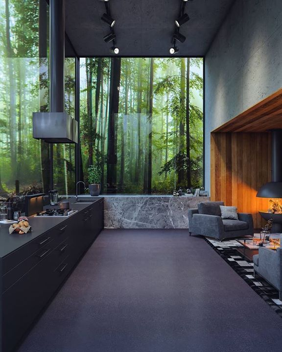
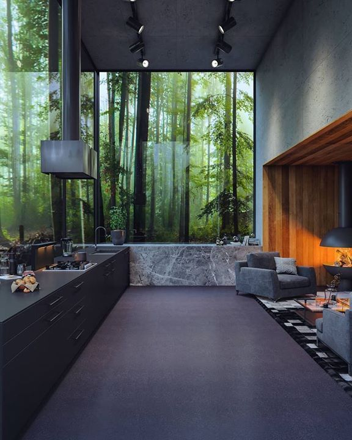

![Lost In Translation (2003) [736x1104]](images/atulvinayak/Sys2/407083253827268449_Lost In Translation (2003) [736x1104].png)
 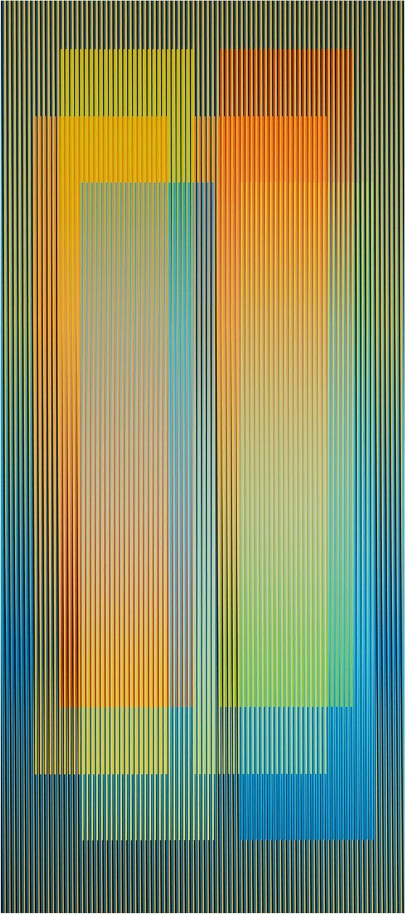
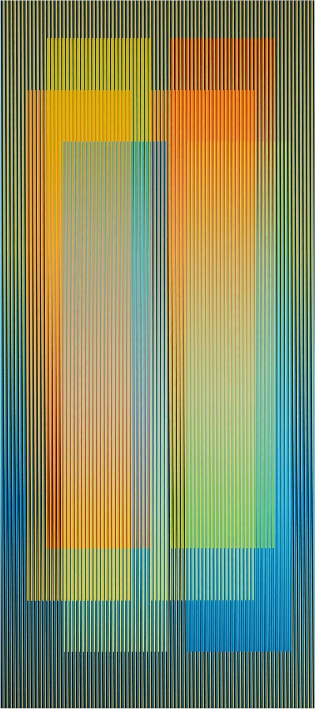

 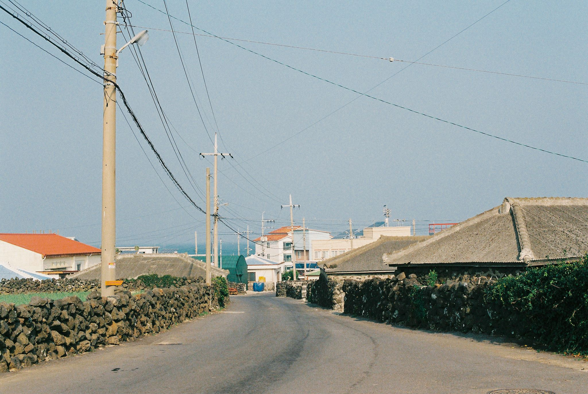
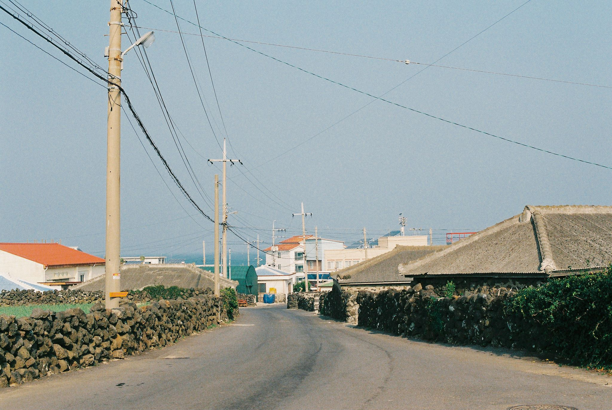


 _ Twitter.png)


 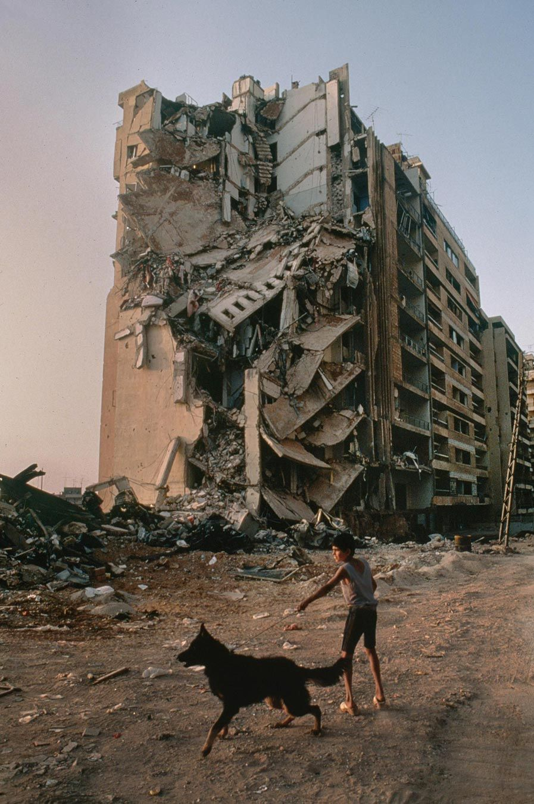
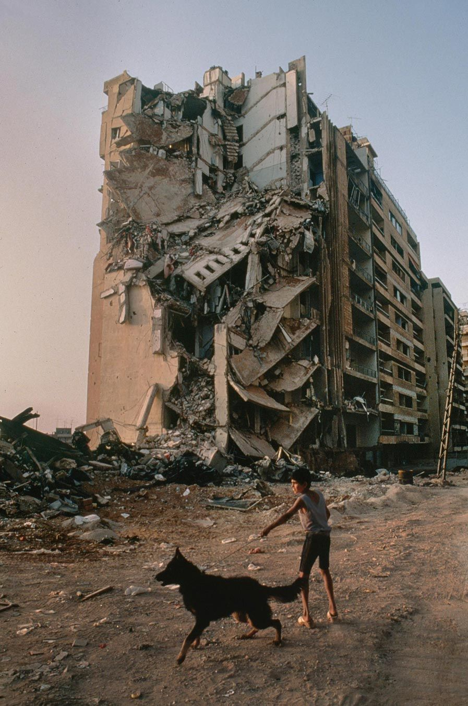


 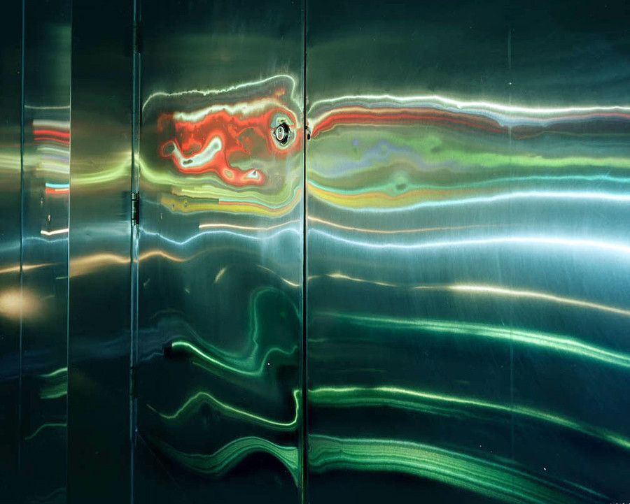
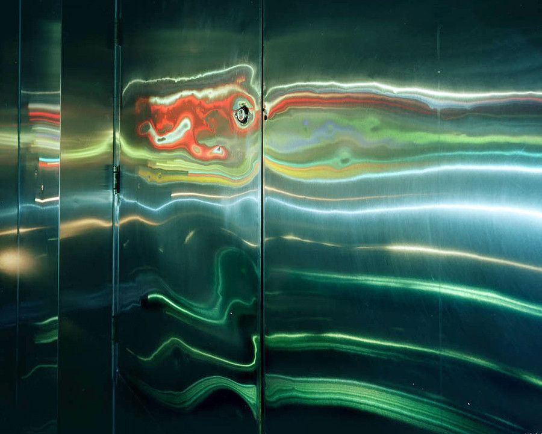


 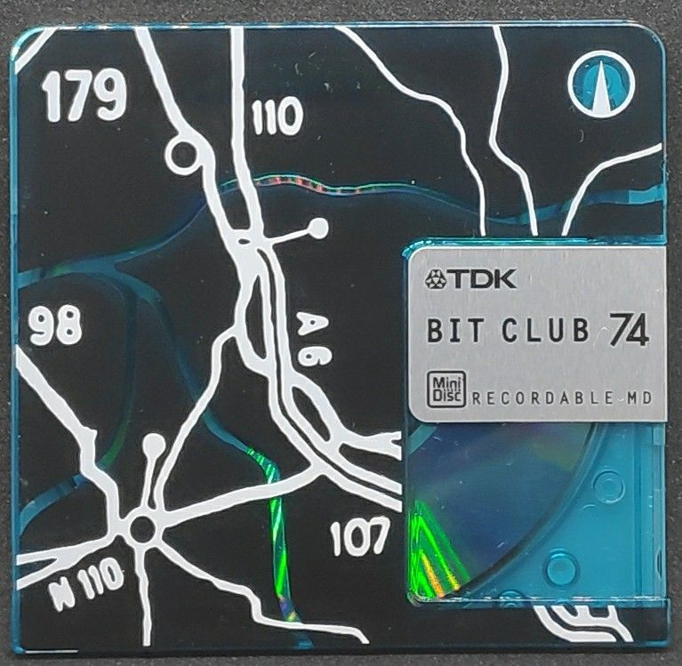
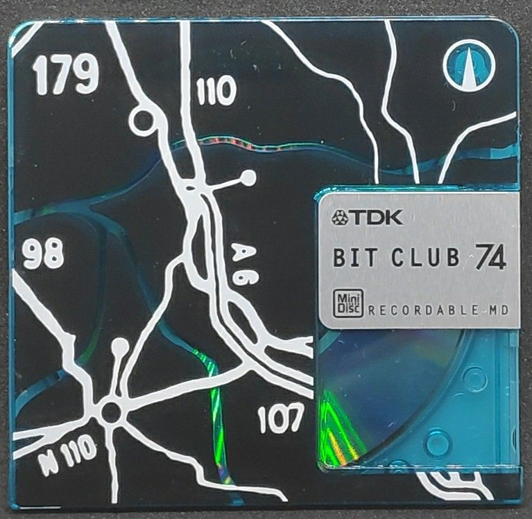


_岩倉しおりiwakura shiori (@Shiori1012) _ Twitter.jpg)


 - English Version.jpg)